Logic Reactor¶
The Logic Reactor defines the internal logic of a Node Controller, and provides a graph based interface to configure logical operations and behaviours.
Graph Settings¶
The Graph Settings panel shows the currently selected graph, and Node Controller.
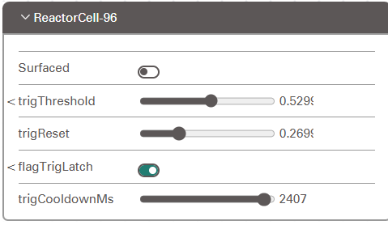
Block Parameters¶
The Block Parameters panel shows the parameters that can be adjusted on the selected block.
Individual block parameters are described in detail in the Blocks Section below, but some features are common to all blocks:
Surfaced: The Surfaced toggle determines whether or not this blocks parameters are made visible in the dashboard. A Node Controller's surfaced parameters appear in the Hardware panel when it is selected in the dashboard.
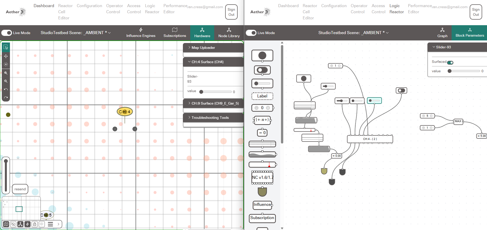
Blocks¶
Software Inputs¶
Software Input blocks create continuous inputs to the logic graph. These inputs can be manipulate via the Logic Editor user interface, or Surfaced to be made visible in the Hardware Panel of the Dashboard.
 Button:¶
Button:¶
The button block provides a momentary input of 1.0 when pressed in the Logic Editor. When not pressed the button provides an input of 0.0.
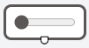
Slider:¶The slider provides a continuous input between 0.0 and 1.0 depending on how it is set. Grab the handle to adjust the value in the Logic Editor.
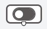
Switch:¶The switch provides a continuous input of 0.0 or 1.0 depending on its state. Click the switch in the Logic Editor to toggle its state.
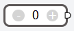
Integer:¶The integer input provides a continuous integer value. Use the plus or minus buttons in the Logic Editor to adjust its value.
External Inputs¶
Hardware Inputs are driven from the Analog & Digital sensor readings on a Node Controller. When a Node Controller is selected in the
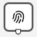
Touch:¶The Touch block provides input from the Capacitive Touch sensor of the Node controller. The touch block also provides parameter to remap the raw touch values from the Node controller to a 0.0 to 1.0 range:
| Name | Description |
|---|---|
| rest | The Baseline touch value, use the "Set Rest" button to set this value when nothing is touching the capacitive touch sensor |
| hard | The Maximum touch value, use the "Set Hard" button to set this value while firmly gripping the capacitive touch sensor |
| interpolation | Not yet used |
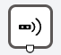
Analog Sensor:¶The Analog Sensor block provides input from the Analog Sensor attached to the Node Controller. This block also provides parameters to remap the sensor range:
| Name | Description |
|---|---|
| floor | The Baseline value, used for remapping |
| ceiling | The Maximum touch value, used for remapping |
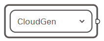
Influence:¶The Influence Input provides the current influence of the selected Influence Engine on this Node Controller ( Modulated by the Node Controllers React Ability's Subscription level )
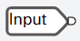
Message Input:¶The message input allows the Node controller to listen for input over OSC. The key parameter allows you to define the OSC address this block should listen to. Messages with the address format /logic/[key] will be received by this block.
Operators¶
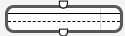
Trigger Threshold:¶Trigger threshold sets a threshold value that must be reached before a value is emitted. Note the trigger value is equal to the input value, as long as the input value is above the trigger Threshold. The Tigger Threshold block has the following parameters:
| Name | Description |
|---|---|
| trigThreshold | Threshold value above which this block outputs a trigger value |
| trigReset | Value below which the latch resets |
| flagTrigLatch | If enabled, the input value must drop below the trigRest value before this block will output another trigger value. |
| trigCooldownMs | Defines a cooldown time between the output of trigger values. |
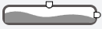
Sequence:¶The Sequence operator plays back a user defined sequence when it receives an Input. Use the Edit Sequence in the block parameters to draw a new sequence.
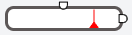
Propagation:¶A delay. The propegation operator starts a timeline when it receives an input, at the specified point on the timeline it outputs an attenuated trigger value.
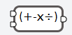
Math:¶The math operator allows you to select a math operation to be done on it's two input values. The available operations are:
| Symbol | Desciption |
|---|---|
| + | Addition |
| - | Subtraction |
| X | Multiplication |
| ÷ | Division Note: Division by 0 will return Infinity |
| % | Modulo |
| > | Greater Than Note: Returns 1.0 if True, 0.0 if False |
| < | Less Than Note: Returns 1.0 if True, 0.0 if False |
| == | Is Equal To Note: Returns 1.0 if True, 0.0 if False |
| != | Is Not Equal To Note: Returns 1.0 if True, 0.0 if False |
| MAX | Maximum. Returns the greater of the two values |
| MIN | Minimum. Returns the lesser of the two values |
Outputs¶
Node Controller:¶
Test Text
Actuation Visualizer:¶
Test Text
Value Display:¶
Test Text
Subscription:¶
Test Text